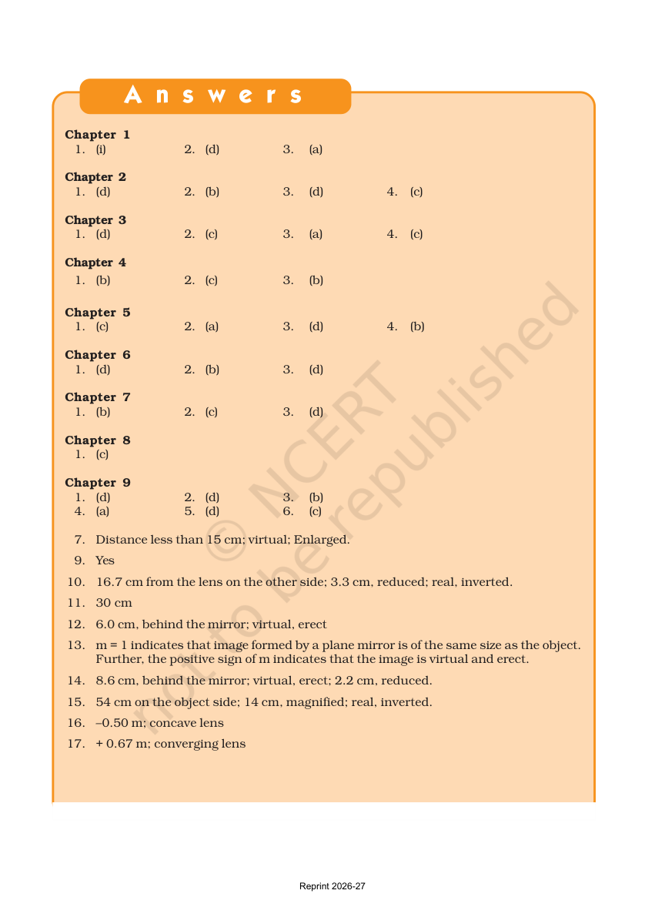
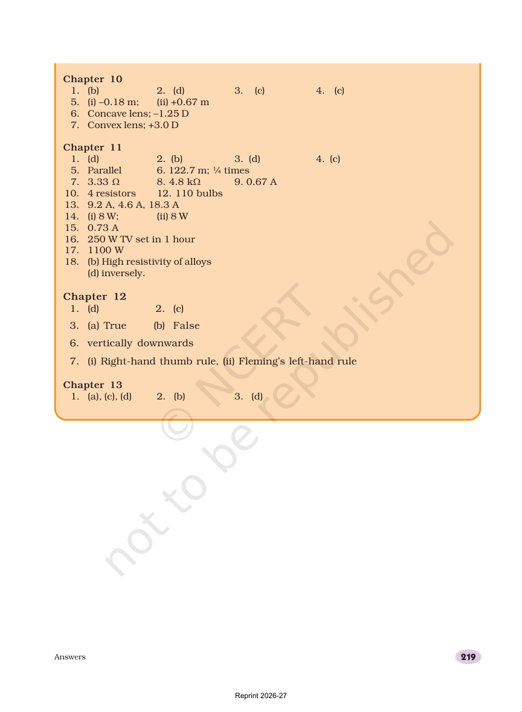

This is a self-check helper, not a lesson chapter
The source PDF is an answer resource, so this workshop turns it into a friendly revision tool.
Key ideas
- Use it after trying the questions yourself.
- Learn how chapter numbers, option letters, and short answers are shown.
- Turn mistakes into clues for what to revise next.
Page previews


Meet the answer key
The answer pages are chapter-wise and compact. That makes them good for self-marking, not for copying.
Key ideas
- Chapter numbers help you find the right section quickly.
- Letters like a, b, c, and d show multiple-choice answers.
- Some answers are short phrases instead of letters.
Page previews
How to read the answer patterns
This resource shows several answer styles, so you can learn what kind of question each one belongs to.
Key ideas
- More than one letter can mean more than one correct option.
- True/False entries come from statement questions.
- Short answers show the key idea you should remember.
Page previews
Check, fix, and retry
The best revision happens after a mistake: compare, spot the gap, and try again.
Key ideas
- Mark your own attempt before opening the key.
- Circle the questions you missed.
- Retry after one more quick review.
Page previews
Fast revision habits
A calm routine keeps revision honest and useful.
Key ideas
- Work chapter by chapter.
- Use the key to see what you know well.
- Keep a short list of ideas to revisit.
Page previews
Quick self-check
These questions are saved in this browser. Pick an answer, see the feedback, and use Try again to reset everything.
Using the key
This resource is for checking, not skipping practice.
Reading patterns
Different answer shapes tell you what kind of question it was.
Fixing mistakes
Mistakes are clues for what to revise next.
Revision habits
Use the key to learn, not to copy.